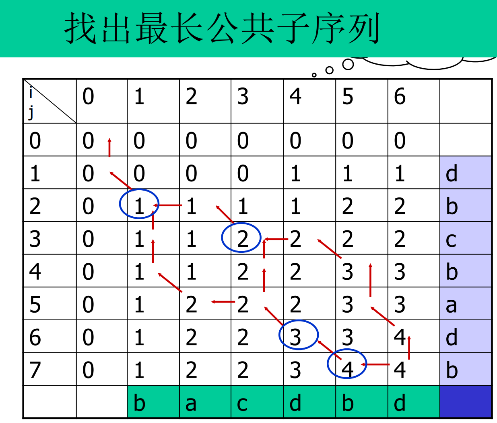
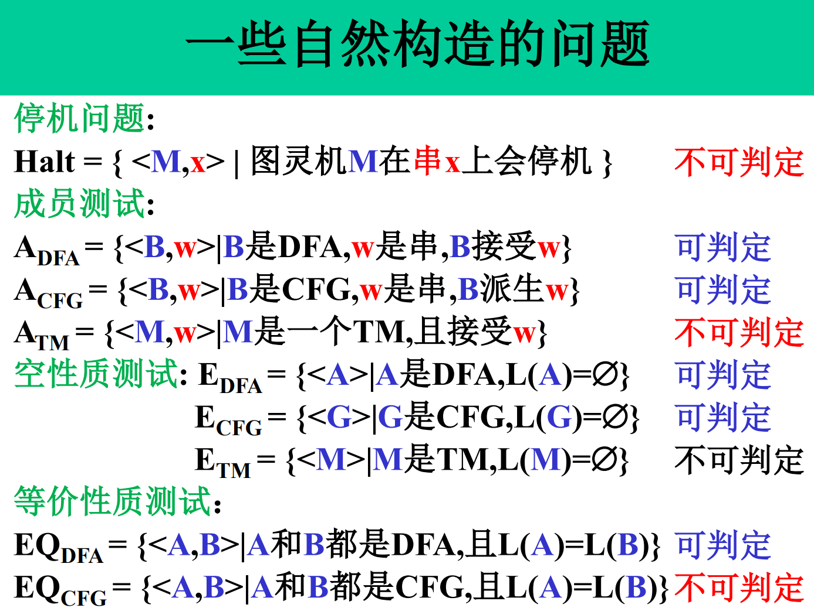

复习
导论与分治
算法五个特征：
- 有穷性
- 确定性
- 输入
- 输出
- 可行性
算法评价标准：正确性、有效性、可读性
分治算法步骤：
- 划分步
- 治理步
- 组合步
分治算法子问题要求子问题相互独立，原问题可分解为若干个规模较小子问题（基础），子问题规模大致相等，子问题和原问题类似，子问题合并能得到原问题解（关键）
求最大最小元，递归，或划分为两个一组，最优比较次数均为\(\frac {3n} 2 - 2\)
快排最好时间复杂度为\(O(nlogn)\)，最坏为\(O(n^2)\)。不稳定。优化：选数组第一个、最后一个、中间位置，三个里面选一个中间值作为基数。或在序列较短时采用更直接的排序。也可以随机选一个元素作基数
循环赛日程表：若有n个选手。n为偶数时，进行n-1天，若为奇数，进行n天
最大子段和，递归，每次对半分。合并时，分三种情况，最大和对应子段在左边，在右边，在中间。在中间的话，通过\(max_{1\leq i \leq n/2} \sum_{k=i}^{n/2} a_k + max_{n/2 + 1 \leq i \leq n} \sum_{k=n/2 + 1}^i a_k\)计算，然后对比三种情况即可。时间复杂度为O(nlogn)
Strassen矩阵乘法。降低每次计算的乘法次数。对2x2的相乘，可从8次降低到7次，时间复杂度由\(O(n^3)\)降低到\(O(n^{2.81})\)。
一维最近点对：按中位数，分割为两部分分别求。合并时共三种情况，其中若最近点对在中间，只需要花线性时间就能找到，所有情况合起来，合并只需要线性时间。总时间\(O(nlogn)\)
二维最近点对。仍然照这样划分。合并时，考虑最小点跨两个区域，取\(d=min\{d_L, d_R\}\)，判断划分那条线的d范围内的点。时间复杂度O(nlogn)，然后划分的区域两侧分别有一个\(d\times 2d\)的矩形，每个矩形最多包含六个区域内的点，所以合并最多只需要检查\(6\times n/2 = 3n\)个候选点。对于S1中的点p，将S2内所有点投影到划分直线上，检查与p投影相邻的六个点即可，检查过程可以随时更新d
大整数乘法，若每两个一位数乘法或加法看做一次运算，则需要进行\(O(n^2)\)次运算才能求出XY。采用分治，将X分解为\(X=A 2^{n/2} + B\)，Y分解为\(Y= C2^{n/2} + D\)，直接计算：\(XY = AC 2^n + (AD + BC)2^{n/2} BD\)，一共需要四次乘法。令\(u=ac, v=bd, w=(a+b)(c+d)\)，则有\((ad+bc)=w-u-v\)，变为三次乘法，用时\(\Theta(n^{log_2 3})\)
线性时间选择：找第k小的数。将n个数五个五个分组，取出每组中位数，再找到这些中位数的中位数，以这个数为基准进行划分，然后将比基准小的都放在左边，大的都放在右边，这样可以保证至少排除1/4的元素。若划分出的子数组长度都至少为原数组长度的\(\epsilon\)倍(\(\epsilon\in (0,1)\))，就可以在最坏O(n)时间完成任务。递归方程\(T(n)\begin{cases}O(1), n\leq n_0,\\ T(n/5) + T(3n/4) + O(n), n\geq n_0\end{cases}\)，其中T(n/5)为找中位数用时，\(T(3n/4)\)为排除至少1/4的元素后用时，O(n)为分组排序耗时以及按基准划分耗时
线性选择应用：中位数原理，在X轴上有n个点，找点p（不一定是n个点内），使p到各点距离和最小，解为中位数（如果n为奇数），或中间两点的闭区间内
动态规划
用一个表记录所有已求解的子问题答案，自底向上计算（自顶向下为备忘录，适用于某些子问题根本没必要求解的情况）。有效性依赖于问题的两个性质：
- 最优子结构：问题的最优解包含了其子问题的最优解
- 重叠子问题：子问题有重叠，只计算一次，记录在表中
矩阵连乘：两个矩阵\(A_{m\times n}, B_{n\times k}\)相乘的乘法次数是\(m\times n \times k\)（因为计算出结果矩阵的一个元素需要n次乘法，结果矩阵有m*k个元素）。动态规划方程\(m[i:j] = min\{m[i:k] + m[k+1:j] + q_{i-1}q_kq_j\}\)
最长公共子序列，穷举需要的比较为\(2^{m+n}\)次。动态规划，先填表：

然后画三种箭头，最长路径对应斜箭头的出发格子，对应字母组成序列为最长子序列。空间复杂度\(\Theta (mn)\)，若只需要长度，则只需要\(\Theta(min(m,n))\)
最大子段和。b[j]表示以j结束的最大子段和，则问题为求\(max_j b[j]\)。动态规划方程\(b[j] = max\{b[j-1] + a_j, a_j\}, 1\leq j\leq n\)
0-1背包问题。给定一个载重量为M的背包，n个重量为\(w_i\)，价值为\(p_i\)的物体，要求把物体装入背包，使价值最大，且重量小于M。问题\(optq_i(j)\)表示前i个物体中，能够装入载重量为j的背包中的物体的最大价值则动态规划方程为\(optq_i(j) = \begin{cases} optp_{i-1}(j), j \leq w_i \\ max\{optp_{optp_{i-1}(j)}, optp_{i-1} (j-w_i) + p_i\}, j> w_i \end{cases}\)，其中\(optp_i(0) = optp_0(j) = 0, j=1,2,\dots,m\)。回溯从右下角开始，若大于上方格子，则说明这个物品装了，减去对应重量，再看上面行...
推广为资源分配问题。用\(g_i(x)\)表示x万投入第i个项目获得的收益，用\(f_i(x)\)表示总x万投入到前i个项目的最大收益。动态规划方程\(f_i(x) = max\{g_i(y) + f_{i-1}(x-y)\}, y\in [0,y]\)
多段图最短路问题：\(cost(i,j) = min\{C(j,r) + cost(i+1, r)\}\)，cost(i,j)表示\(V_i\)中的点j到终点的花费
货担郎问题：求加权完全图的最小权哈密顿回路。动态规划方程\(f(v_i; V) = min\{d_{i,j} + f(v_j; V - \{v_j\})\}, v_j\in V\)，且\(f(v_i; \Phi) = d_{i1}\)（即从最后一个点回1），初始问题为\(f(v_1; V)\)
凸多边形最优三角剖分...形成语法树，类似矩阵连乘中加括号问题
最长递增子序列。MTIS(k)表示所有长度为k的递增子序列中，末尾元素最小的子序列。有结论\(MTIS(1).last < MTIS(2).last < ... < MTIS(n).last\)。处理新元素的三种情况：
- 替换最小头：如果\(x<MTIS(1).last\)，说明x比当前所有长度为1的子序列尾巴都小
- 追加变长：若\(x\geq MTIS(len).last\)（len为当前最长长度），则x可以接到当前子序列后面，形成更长子序列
- 中间替换：若\(MTIS(s-1).last \leq x < MTIS(s).last\)，说明x能接在长度为s-1的子序列后面形成长度为s的新子序列，且形成的序列比当前长度为s的尾巴更小。此时用x替换MTIS(s).last
因为尾巴序列递增\(MTIS(1).last < MTIS(2).last < ... < MTIS(n).last\)，所以可以用二分搜索找到情况3的s的位置，使算法整体复杂度变为\(O(nlogn)\)。可以通过增加父亲标记来避免每次都存整个序列
贪心算法
需要问题满足贪心选择性质和最优子结构性质才能得到最优解。自顶向下求解，每作一次贪心选择就将所求问题简化为规模更小的子问题
贪心算法无法获得货担郎问题最优解
活动安排，求相容的最多的活动数。先按活动结束时间排序，从早到晚依次选择相容的活动，能得到最优解
多机调度问题。使n个作业在尽可能短的时间内由m台机器加工处理完成。先排序，先分配耗时长任务，然后以后的任务都分配给当前任务总耗时最小的任务。主要耗时在排序，\(O(nlogn)\)
分数背包问题。贪心选择依据为效益值（为单位重量的商品的价值），先拿效益值大的
有限期任务安排问题。在同一台机器上加工n个任务，每个任务完成时间均为1个单位，每个任务都有一个完成期限，只有在期限前完成才有\(p_i\)的效益。贪心选择依据可以是效益、期限从短到长选
最优装载：给定载重量和每个货物的重量。贪心选择依据为重量，先装轻的
车间作业计划，一台机器n个零件，使各个加工零件在车间里停留的平均时间最短。先选加工时间小的
前缀码，要求任一字符的代码都不是其它字符代码的前缀。平均码长为所有字符c出现频率乘在树中的深度求和，使平均码长最小的前缀码编码方案称为最优前缀码
Prim算法，选与已选节点相邻的边中权最小的边（不能成环），重复直到所有节点都被选完
Kruskal算法，n个顶点看做n个孤立连通分支，将所有边按权从小到大排，然后从第一条边开始，依权重递增顺序查看每条边，尝试加入（若加入后成环则不加入）。图的边数为e时，计算时间为\(O(eloge)\)。可以用并查集看是否成环
并查集算法基本操作（p[x]记录x的父亲，rank[x]记录树的高度）
- Make(x)，初始化，将x单独建立一个集合，且令p[x]=x，即父亲为自己，rank[x]=0
- Find(x)，查找根节点并同时路径压缩。递归找根节点，同时将路径上所有节点的父亲设置为根节点
- Link(x,y)，按秩合并两树的根，直接把rank小的根接到rank大的根上
回溯算法
搜索空间的三种表示：
- 表序表示：搜索对象用线性表数据结构表示
- 显示图表示：搜索对象在搜索前就用图（树）的数据结构表示
- 隐式图表示：除了初始节点，其他节点在搜索过程中动态生成。因为有时搜索空间大，难以全部存储
深度优先搜索是不完备的（例如有时会搜索无穷分支），解决方法是引入搜索深度的界限
启发式搜索：\(f(x) = g(x) + h(x)\)，f为估价函数，g为已经付出的代价，h为到目标节点的估计代价
回溯算法在解空间树内用深度优先搜索，搜索前要先判断该节点是否包含解，如果肯定不包含则直接跳过
- 可行解：满足约束条件的解，是解空间的子集
- 最优解：使目标函数取极值（极大或极小）的可行解，一个或少数几个
回溯基本步骤
- 定义解空间
- 确定易于搜索的解空间结构
- 以深度优先搜索，在过程中用剪枝函数避免无效搜索。常用剪枝函数：
- 约束函数：在扩展节点处剪去不满足约束的子树
- 限界函数：剪去得不到最优解的子树
相关概念：
- 扩展节点：正在产生儿子的节点
- 活节点：一个自身已生成但儿子还没有全部生成的节点
- 死节点：一个所有儿子已经产生的节点
- 深度优先问题在状态生成法：对一个扩展节点R，一旦产生一个儿子C，就把C当做新扩展节点，在完成对子树C的穷尽搜索后，将R重新变为扩展节点，继续生成其他儿子（如果存在）
- 宽度优先的问题状态生成法：在一个扩展节点变为死节点之前，一直是扩展节点
具有限界函数的深度优先生成法称为回溯法。用回溯法时，在搜索过程中动态产生问题的解空间，在任何时刻，算法只保存从根节点到当前扩展节点的路径，即计算空间为\(O(h(n))\)，h为从根节点到叶节点最长路径长度
- 子集树：从n个元素集合中找出满足某性质的子集时，相应解空间为子集树。遍历需要\(O(2^n)\)
- 排列树：求n个元素满足某性质的排列时，相应解空间为排列树。遍历需要\(O(n!)\)
0-1背包问题
任务分配问题。以当前时间+剩余最少时间为关键值扩展新节点
装载问题，n件货物，重量为\(w_i\)，装两艘载重量为\(c_1, c_2\)的船，使装的货物重量最大。装载方案为尽可能装满第1艘，剩余装第二艘（可证明能得到最优装载方案）。则可以等价于一个0-1背包问题，用回溯法进行搜索
TSP旅行售货员问题，解空间为排列树
n皇后问题。在\(n\times n\)棋盘上放置彼此不受攻击的n个皇后。约束：\(x_i\neq x_j, |i-j| \neq |x_1 - x_j|\)
图的着色问题
最大团问题。
- G的完全子图U是G的团，当且仅当U不包含在G的更大的完全子图中。
- G的最大团指G中所含顶点数最多的团。
- 空子图指只有顶点无边的图（即\(U\subset V\)，但U的顶点之间无边）
- G的空子图U是G的独立集当且仅当U不包含在G的更大的空子图中
- 最大独立集：指G中所含顶点数最多的独立集
- 补图：将原来没有的边和有的边对调，记为\(\bar G\)。U是G的最大团当且仅当U是\(\bar G\)的最大独立集
解空间为子集树。仍然通过回溯进行搜索。可以加入限界函数，如果当前的团假设剩余的节点数量小于已得到最大团，则直接跳过。也可以加入启发性，例如将顶点按度从小到大排列
符号三角形。由+、-组成的三角形，第一行有n个符号，往下递减。两个同号下面是+，异号是-，求满足+-号数量相等的三角形个数。限界条件：0，1个数都不超过\(\frac {n(n+1)} 4\)
子集和问题，给定由n个不同正数组成的集合，和正数M，求W中所有和等于M的子集的集合
有限自动机
正则语言对交、并、连接、星号封闭
NFA确定化：子集法
以下互相等价：NFA、DFA、正则表达式
泵引理：若A是正则语言，则存在正整数p，使得对任意\(w\in A, |w|\geq p, \exists w=xyz\)满足：
- \(xy^i z \in A, i \in N\)
- \(|y| > 0\)
- \(|xy| \leq p\)
图灵机
转移函数\(\delta : Q \times \Gamma \mapsto Q \times \Gamma \times \{L,R\}\)
在箭头上写\(A\rightarrow B, L\)，表示读到A，改为B，然后左移。若\(A\rightarrow A, R\)这种，可简写为\(A\rightarrow R\)
图灵机三种判定结果：
- 接受状态，停机并接受输入
- 拒绝状态，停机并拒绝输入
- 一直运行不停机
若图灵机对所有输入都停机，则称为判定器
格局uqv，表示当前状态为q，存储带上字符串为uv（其余为空格），读写头指向v的第一个符号
图灵可识别语言，包含可判定语言，包含上下文无关语言，包含正则语言
图灵机的描述：
- 形式水平的描述：状态图或转移函数
- 实现水平的描述：读写头的移动、改写
- 高水平的描述：使用日常语言，用带引号的文字段来表示图灵机
等价模型：图灵机、多带图灵机、非确定图灵机、枚举器、带停留的图灵机
可计算理论

若A和A的补是图灵可识别的，则A图灵可判定
时间复杂性：
- 若\(\limsup_{n\to \infty} \frac {f(n)} {g(n)} \leq c\)，记为\(f(n) = O(g(n))\)
- 若\(\lim_{n\to \infty} \frac {f(n)} {g(n)} = 0\)，记为\(f(n) = o(g(n))\)
对于函数\(t: N\mapsto N\)，时间复杂类\(TIME(t(n))\)定义为\(TIME(t(n)) = \{L| \exists O(t(n)) \text{的TM判定L}\}\)
时间\(o(nlogn)\)的单带图灵机判定的语言是正则语言。则由此可得\(TIME(o(nlogn)) \subset \text{正则语言类} \subset TIME(n) \subset TIME(o(nlogn))\)，即\(\text{正则语言类}\Leftrightarrow TIME(n) = TIME(o(nlogn))\)
设函数\(t(n) \geq n\)，则每个t(n)时间多带TM和某个\(O(t^2(n))\)单带TM等价
对非确定判定器，运行时间指所有长为n的输入上，所有分支的最大步数。设\(t(n) \geq n\)，则每个t(n)时间NTM都有一个\(2^{O(t(n))}\)时间单带确定TM与其等价。即\(NTIME(t(n)) \subset TIME(2^{O(t(n))})\)
P是单带确定TM在多项式时间内可判定的问题，即\(P=\bigcup_k TIME(n^k)\)。NP是单带非确定TM在多项式时间内可判定的问题，即\(NP = \bigcup_k NTIME(n^k)\)，也是能在多项式时间内能快速验证的问题
P问题：
- 求最大公因子：欧几里得算法、辗转相除法
- 模p指数运算\(a^b\ mod\ p\)
- 上下文无关语言有\(O(n^3)\)判定器
- 素性测试
NP问题：
- HP：哈密顿路径
- CLIQUE：有k团的无向图（即包含一个含k完全子图的无向图）
k-cnf：子句文字数不大于k的合取范式
可满足问题：
- \(SAT = \{<\phi> | \phi \text{是可满足的布尔公式}\}\)，为NPC
- \(2SAT = \{<\phi> | \phi \text{是2-可满足的2cnf}\}\)，为P
- 3SAT：3-可满足的3cnf，为NPC
2SAT清洗：
- 找到单文字子句，删除其他含该单文字的子句，删其他子句中含相反的该文字的文字，一直到无单文字。过程中若出现相反单文字子句则输出不可满足，若清洗后为空则输出可满足，否则进行下一步
- 只有双文字子句时，对每个变量进行两次尝试：分别赋值为1和0，然后操作同上一步。若两次赋值均失败则输出不可满足，否则输出满足
3SAT属于NP，因为可以非确定性枚举，枚举后的判断在多项式时间内进行
\(\forall w, w\in A\Leftrightarrow f(w) \in B\)，记为\(A \leq_P B\)，称A可在多项式时间映射归约到B。意味着B比A更难或者一样难，因为A的实例可以转化为B，如果B解决了，A只需要调用B即可解决。而要是A解决了，B不一定能被解决，所以B更难
Cook-Levin定理：SAT是NPC的。即证明任何NP问题都能变为SAT，即证明对于任意NP问题B，其任意判定问题，例如判定w，都能转化为一个布尔公式的可判定性问题即可。构造变量\(x_{i,j,s}\)，表示表格第i行第j列是否为s。再由NTM可以得到一系列公式：
- \(\Phi_{start}\)：第一行是起始状态
- \(\Phi_{cell}\)：每格有且仅有一个符号
- \(\Phi_{accept}\)：含接受状态
- \(\Phi_{move}\)：每行由上一行格局产生，只用判断2x3的窗口
最终公式\(\Phi = \Phi_{start} \land \Phi_{cell} \land \Phi_{accept} \land \Phi_{move}\)。然后若原问题可判定w，则该公式可满足，否则不可满足（即不存在合法接受格局序列）。
通过改写上述证明的四个公式为3SAT形式，则可以得到3SAT也是NPC的（\(a_1\lor a_2\lor \dots \lor a_k\)等价于\((a_1 \lor a_2 \lor \dots \lor a_{k-2}) \land (\neg z \lor a_{k-1} \lor_k)\)，反复使用可将1个k-文字子句变为k-2个3-文字子句）
归约引理：若\(A\leq_P B, B\in P\)，则\(A\in P\)。因为B比A更难，且B能在多项式时间内被解决，则A经过多项式归约到B后，再调用B，总时间仍然为多项式
\(3SAT \leq_P CLIQUE\)。令每个子句为一组，共k组，一组有3个节点（分别代表对应文字），同组节点之间无边，组间的相反文字之间无边，其余情况有边。要证明3SAT可变为k-CLIQUE问题。因为同组节点之间无边，则k个节点只可能在不同组间，若公式可满足，则在图中存在一个k-团（因为若可满足，则可以在每个组中选一个赋值为1的节点，两两相连形成k-团，此时满足连线条件），相反也说明若找得到k-团，则公式可满足。由此可得CLIQUE也是NPC
有向图哈密顿路径HP是NPC，即证\(3SAT \leq_P HP\)。变量构件为钻石结构，子句若包含\(x_i\)，就在\(x_i\)的钻石结构中间那一部分，选两个相邻节点，从左到右连或从右到左（必须规定例如无否定的话为从左到右，否定为从右到左。且不同子句在同一个变量的水平节点连接，需要有分隔节点进行分隔）。此时若公式可满足，则存在正规哈密顿路径（整体从上到下，按变量顺序依次穿行...）
无向图哈密顿路径UHP为NPC。将每个节点拆为三个节点设为ABC，入边都连A，出边都连C，AB，BC相连
无向图哈密顿回路UHC是NPC的。证明为NP直接非确定性枚举。接下来证明UHP可以转化为UHC。因为UHP是求s到t的哈密顿路径，则加一个节点a，连接as、at，变为求哈密顿回路问题
TSP是NPC。无向图G有从s出发回到s，权和小于等于b的哈密顿回路。证明为NP（枚举可能性）。证UHC可以规约到TSP。将图补为完全图，且若两节点相同，自环权重为0，若不同，且原来有边相连，权重为1，若不同且原来无边相连，则权重为2，找其中权重小于等于节点数的哈密顿路径，即变为了TSP
0-1背包问题KS是NPC。\(KS = \{<A,t> | t \text{等于A中一些数的和}\}\)。易得为NP。接下来把3SAT变为该问题。设\(\phi\)为3cnf，且有n变量，k子句。构造A包含以下的数（每个数包含n+k位，前n位代表变量，后k位代表子句）：
- \(y_1, \dots, y_n\)。对第i个y，前n位，只在第i位写1，后k位，如果第j个子句包含正文字\(x_i\)，则在第j位写1
- \(z_1, \dots, z_n\)。对第i个z，前n位，只在第i位写1，后k位，如果第j个子句包含负文字\(x_i\)，则在第j位写1
- \(g_1, \dots, g_k\)。对第i个g，前n位全部写0，只在第i位写1
- \(h_1, \dots, h_k\)。同g
- t为目标数。前n位每一个都写1，后k位每个都写3（每个变量只能有一个1，每个子句必须凑够3）